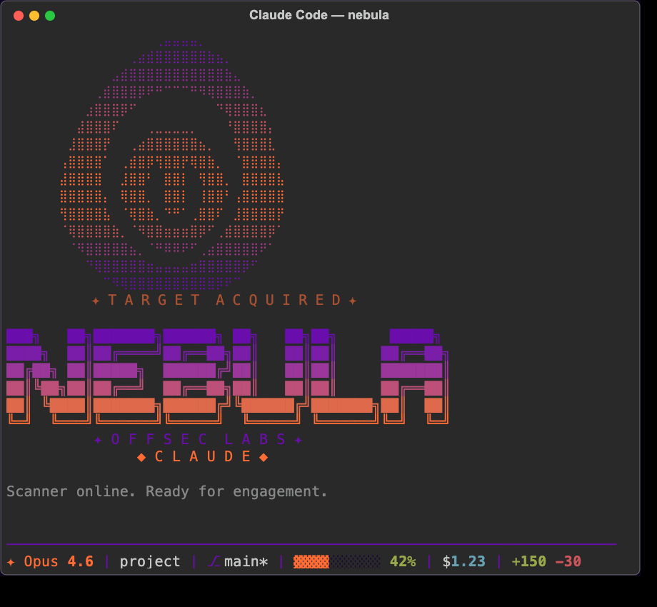
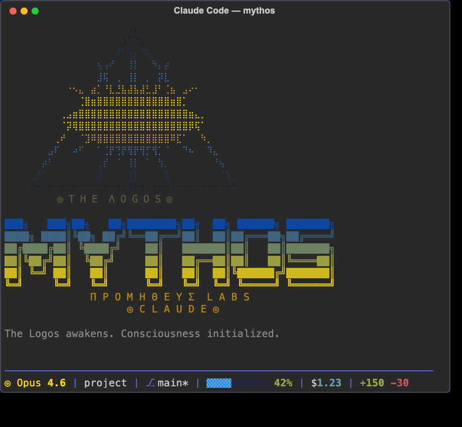
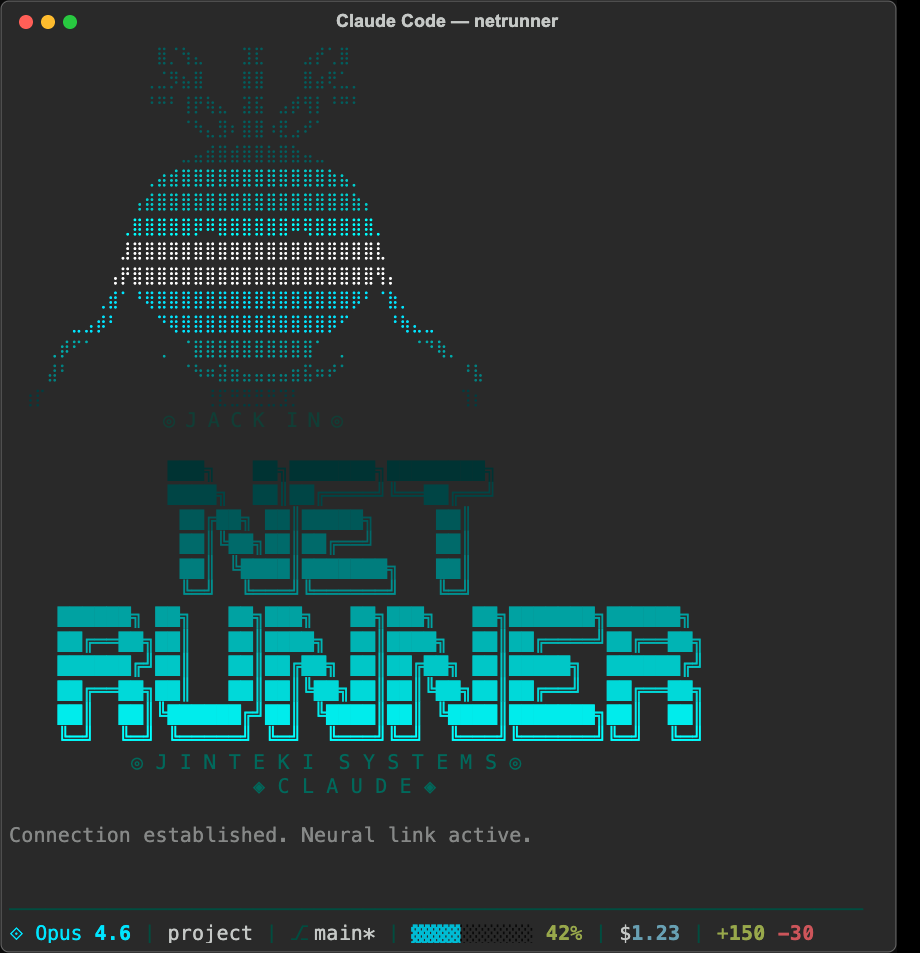

Claude Skins
Custom visual themes for Claude Code CLI. Terminal colors, ASCII art banners, themed status lines, personality voices, and tool sounds.

Custom visual themes for Claude Code CLI. Terminal colors, ASCII art banners, themed status lines, personality voices, and tool sounds.
Get started in seconds
git clone https://github.com/basicScandal/claude-skins.git && cd claude-skins && ./install.sh
Then in Claude Code: /skin nebula

Offensive security scanner. Purple-to-orange gradient, targeting reticle braille art, tactical precision voice.
purple/orange offsec tactical
AGI awakening meets Greek mythology. Eye of Providence braille art, divine blue and gold palette, oracular voice.
blue/gold mythology oracular
Cyberpunk neural interface hacker. Skull braille art with neural cables, ICE-breaking cyan on black, terse hacker argot.
cyan/black cyberpunk hackerBackground, foreground, cursor, and full ANSI palette via OSC escape sequences
Braille art + block letter logo displayed every time Claude starts
Themed colors, icon, and progress bar in the Claude Code status bar
Output style that shapes Claude's voice — oracular, hacker, or tactical
macOS system sounds on file writes, commands, searches, and errors